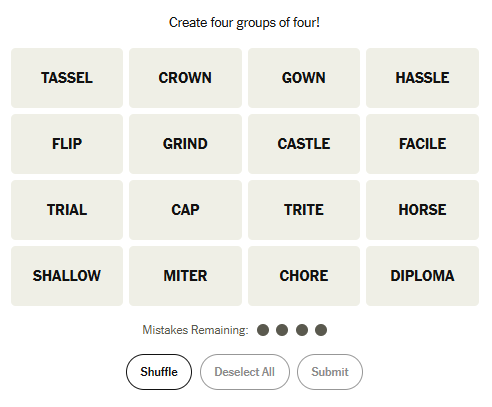

In this assignment, you will create your own version of the Connections game inspired by the New York Times.

Try to find words that belong together.
Select four words that form a group and submit them.
You are only allowed 4 mistakes.
You win by completing all groups before running out of mistakes.
The words Tassel, Gown, Cap, Diploma belong under Graduation Gear.
You must create the following files:
You must also write a one-page reflection including: